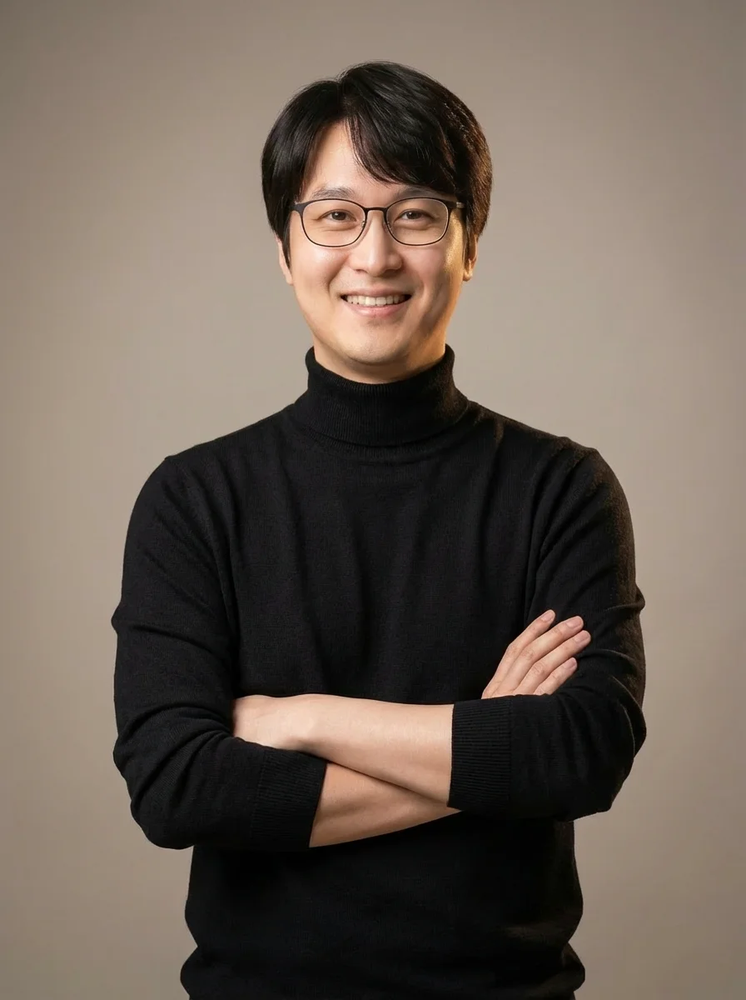
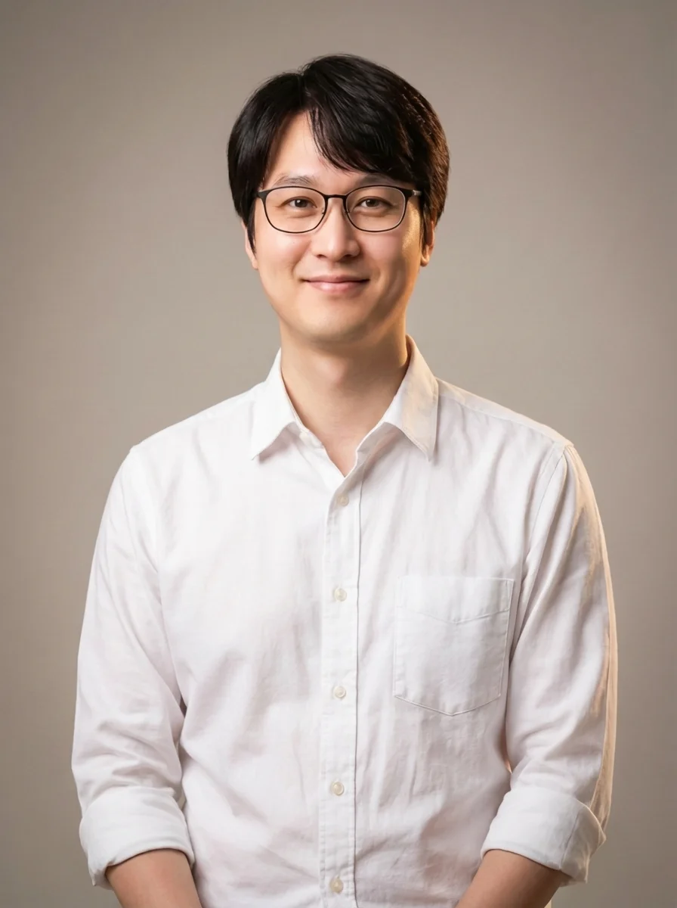

✍️ 박근필 소장
1. 박근필 소장 이력
▼수의사에서 그로쓰 퍼실리테이터로
20년 가까이 임상 수의사로 살다가, 40대에 인생을 리셋했습니다. 현재는 베스트셀러 작가이자 칼럼니스트, 강연가, 커리어 스토리텔러로 활동하고 있습니다.
저서로는 『할퀴고 물려도 나는 수의사니까』 (2023), 『나는 매일 두 번 출근합니다』 (2024), 『마흔 더 늦기 전에 생각의 틀을 리셋하라』 (2025), 『방구석에서 혼자 읽는 직업 토크쇼(공저)』 (2025)가 있습니다.
『마흔 더 늦기 전에 생각의 틀을 리셋하라』는 교보문고 온라인 일간 베스트셀러 1위에 올랐고, 많은 분들에게 위로와 긍정적인 자극을 주었습니다.
1:1 책쓰기 기획 컨설팅 '독저팅'은 '책 쓰기는 80% 기획, 20% 집필'이라는 철학을 전파하며, 출판 계약에 성공하는 책쓰기 노하우를 알려드립니다.
동반성장 북클럽(독서모임) '필북'을 운영 중이며, 회원들의 변화와 성장을 돕고 있습니다.
부산 시청에서 200여명 대상으로 강연하며 강연가로도 왕성하게 활동 중입니다.
📱 SNS 팔로우
📸 프로필


🎤 강연 및 활동 이력
📁 저의 상세 포트폴리오는 리틀리 프로필에서 확인하세요
🔗 litt.ly/tothemoonpark →2. 📰 언론 인터뷰 이력
▼3. ✍️ 칼럼 연재 이력
▼4. 🎤 진로·직업 특강
▼2026년
📅 26.4.24 신곡중학교
📅 26.4.21 김해 수남중학교
📅 26.4.7 부산여중
2025년
📅 25.12.9 금정중
📅 25.12.1 인천 계양중학교
📅 25.11.3 금양중
📅 25.10.29 개금고등학교
📅 25.10.22 김해 제일고등학교
📅 25.9.9 금사중
📅 25.9.8 부곡여중
📅 25.7.14 사직고등학교
📅 25.7.14 부산 부일외국어고등학교
📅 25.7.4 양산고등학교
📅 25.6.26 동래여중
📅 25.6.2 김해 수남중학교
📅 25.5.21 부산 대명여고
📅 25.4.30 브니엘예중
📅 25.4.9 부산여중